Chapter 5. Universal Quantification (Forall)¶
Universal quantification is another core concept in Prove-It. A Forall operation, formatted with the $\forall$ symbol, is used to represent universal quantification. For example, $\forall_x P(x)$ means that $P(x)$ is true for any instance of $x$. $P(x)$ holds true universally over instances of $x$. Like Implies, Forall is a core concept but is defined outside of the core in the proveit.logic package. It is known in the core for use in the specialization and generalization derivation steps discussed below.
First, let us import some necessary information then consider an example of a Forall object like $\forall_{x \,\in\, S \,|\, Q(x), R(x)} P(x)$:
from proveit import Function, ExprList, Lambda
from proveit.logic import Forall
from proveit.number import Less, Add
from proveit._common_ import a, b, x, y, z, P, Px, Pxy, Q, Qx, R, Rx, Ry, S, T
%begin universal_quantification
basicForallExpr = Forall(x, Px, conditions=[Qx, Rx], domain=S)

The meaning of this Forall Expression is that $P(x)$ is a true statement for all instances of $x$ for which $x \in S$ and both $Q(x)$ and $R(x)$ are true.
We can use the exprInfo() method to examine the internal structure of the expression:
basicForallExpr.exprInfo()
| core type | sub-expressions | expression | |
|---|---|---|---|
| 0 | Operation | operator: 1 operand: 2 | |
| 1 | Literal |  | |
| 2 | Lambda | parameter: 13 body: 3 conditions: 4 |  |
| 3 | Operation | operator: 5 operand: 13 | 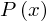 |
| 4 | ExprList | 6, 7, 8 |  |
| 5 | Variable | 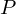 | |
| 6 | Operation | operator: 9 operands: 10 |  |
| 7 | Operation | operator: 11 operand: 13 | 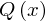 |
| 8 | Operation | operator: 12 operand: 13 | 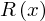 |
| 9 | Literal |  | |
| 10 | ExprList | 13, 14 |  |
| 11 | Variable | ||
| 12 | Variable | 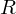 | |
| 13 | Variable | 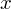 | |
| 14 | Variable |  |
Forall derives from OperationOverInstances (proveit._core_.expression.operation.operation_over_instances.OperationOverInstances aliased as proveit.OperationOverInstances) which generally defines an operation that acts on a lambda map with optional conditions. The idea is like a "functional" (a function of a function). It operates over the range of instances for the lambda parameters for which the condition is satisfied. Other examples of expression types that derive from OperationOverInstances are $\exists$, $\sum$, and $\prod$.
In our example above, we see that the domain $S$ is internally represented via the first condition of the conditional lambda (see Line 2 of the exprInfo() output). In the external representation, it is displayed more compactly along with the introduction of $x$ before the vertical line that precedes the other conditions. This is a matter of presentation style that is independent of how Prove-It treats this expression. As far as Prove-It is concerned, $x \in S$ is simply a condition no different from $Q(x)$ and $R(x)$.
We can view a formatted version of the original object like this:
basicForallExpr
We can use Python's dir() function to get a list of our Forall object's attributes and methods:
dir(basicForallExpr)
and the general Python-provided object attribute __dict__ (using two underscores on each end) to view all the attribute names and values for our specific Forall object:
basicForallExpr.__dict__
Some of the various parts of the Forall expression may be accessed as follows:
basicForallExpr.instanceVar # Variable whose value defines the instance.
# This attribute returns just the first instance variable
# if there is more than one.
basicForallExpr.allInstanceVars() # The list of all variables whose values define the instance
# (may be one or more variables).
basicForallExpr.instanceExpr # The expression being quantified over.
basicForallExpr.conditions # The list of conditions of the universal quantification.
basicForallExpr.domain # Domain of the instance variable.
# If there are multiple instance variables each with its own domain,
# this attribute returns just the domain for the 1st variable.
basicForallExpr.allDomains() # The set of all domains for all instance variables
# (might be 0, 1, or more in the list)
basicForallExpr.explicitConditions() # Returns the list of conditions that appear after the
# vertical line in the notation (i.e., exluding the domain condition(s)).
A More Complex Forall Example¶
We can construct more complex Forall expressions involving multiple instance-defining variables, each from the same domain, like this:
secondForallExpr = Forall([x, y], Pxy, conditions=[Qx, Ry], domain = S)

or specify individual domains for the instance variables:
thirdForallExpr = Forall([x, y], Pxy, conditions=[Qx, Ry], domains = [S, T])

The various parts of such Forall expressions may be accessed as before, with a few special circumstances:
thirdForallExpr.instanceVar # Obtain the first of the instance-defining variables
thirdForallExpr.allInstanceVars() # Obtain a list of ALL instance-defining variables
thirdForallExpr.allInstanceVars()[-1] # Obtain the LAST of all instance-defining variables
thirdForallExpr.instanceExpr # Obtain the first nested expression being quantified over

thirdForallExpr.explicitInstanceExpr() # Obtain the explicit final expression being quantified over
thirdForallExpr.domain # Obtain the domain if just a single domain, or the domain of
# the 1st instance-defining variable if multiple domains
thirdForallExpr.allDomains() # Obtain a list of all domains
thirdForallExpr.conditions # Obtain conditions for first instance-defining variable
thirdForallExpr.allConditions() # Obtain conditions for all instance-defining variables
thirdForallExpr.instanceExpr.conditions # Obtain conditions for 2nd (or 1st-nested) instance-defining variable

Specialization (or Universal Instantiation)¶
The specialization derivation (or universal instantiation) step uses expression substitution internally. The difference is that specialization has proof implications and enforces the extra restrictions to justify these proof implications. It also eliminates one or more of the outer $\forall$ operations.
Basic Specialization¶
Let us take our basic/generic example of the Forall expression above and specialize it with a particular "instance" expression. To do so, we will make assumptions to trivially allow this derivation step to be taken (just to show how this works).
from proveit import Function, ExprList
from proveit._common_ import fy
from proveit.logic import InSet
assumptions = ExprList(basicForallExpr, InSet(fy, S), Function(Q, fy), Function(R, fy))

InSet() is another core concept that is defined outside of the core in proveit.logic. It represents the set membership operation using the $\in$ symbol. It is needed as a core concept specifically for the purpose of ensuring that universal quantification requirements are met (the "instance" expression must be "in" the domain set).
To implement the specialization or universal instantiation where the instance variable $x$ is replaced with the specific instance or value $f(y)$, we have:
basicForallSpec = basicForallExpr.specialize({x:fy}, assumptions=assumptions)
basicForallSpec
 ⊢
⊢ 
We have proven, somewhat trivially, that $P(f(y))$ is true assuming that $\forall_{x \in S~|~Q(x)} P(x)$, $f(y) \in S$, $Q(f(y))$ are all true statements.
Let us take a look at the proof for this statement:
basicForallSpec.proof()
| step type | requirements | statement | ||
|---|---|---|---|---|
| 0 | specialization | 1, 2, 3, 4 | ⊢ | |
| : 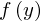 | ||||
| 1 | assumption |  ⊢ ⊢ | ||
| 2 | assumption |  ⊢ ⊢  | ||
| 3 | assumption |  ⊢ ⊢  | ||
| 4 | assumption |  ⊢ ⊢  | ||
This indicates that the proof requires a specialization step (step 0) and explicitly indicates, in the row under step 0, the mapping being performed (mapping $x$ to $f(y)$). The subsequent proof steps that are required are simply proofs by assumption. Specifically, the original Forall expression must be true and the conditions must be satisfied for the instance $x \mapsto f(y)$: $f(y) \in S$, $Q(f(x))$, and $R(f(y))$. If any of these are not known to be true under the provided assumptions, this step will fail. In this example, they are trivially true because our assumptions were chosen to be precisely what needed to be true for the specialization step to succeed.
If we leave out our first assumption (i.e., the original Forall object itself), Prove-It is unable to prove the original Forall expression even after attempting to perform automation and the specialization step will fail.
from proveit import ProofFailure
try:
basicForallExpr.specialize({x:fy}, assumptions=assumptions[1:])
assert False, "Expecting an ProofFailure error; should not make it to this point"
except ProofFailure as e:
print("EXPECTED ERROR:", e)
The automation checks to see if the $S$ Expression has a foldAsForall method that would automate a proof for universal quantification over $S$. Since $S$ is a simple Variable object, no such automation exists.
Next we'll see what happens when the instantiated "instance" $f(y)$ is not known to be in the domain $S$ (i.e., we omit the assumption that $f(y) \in S$):
from proveit import SpecializationFailure
try:
basicForallExpr.specialize({x:fy}, assumptions=assumptions[:1]+assumptions[2:])
assert False, "Expecting an SpecializationFailure error; should not make it to this point"
except SpecializationFailure as e:
print("EXPECTED ERROR:", e)
Finally, we demonstrate the case when one of the "explicit" conditions is not met -- first omitting the assumption that $Q(f(y))$ is TRUE:
try:
basicForallExpr.specialize({x:fy}, assumptions=assumptions[:2]+assumptions[3:])
assert False, "Expecting an SpecializationFailure error; should not make it to this point"
except SpecializationFailure as e:
print("EXPECTED ERROR:", e)
then omitting the assumption that $R(f(y))$ is TRUE:
try:
basicForallExpr.specialize({x:fy}, assumptions=assumptions[:3])
assert False, "Expecting a SpecializationFailure error; should not make it to this point"
except SpecializationFailure as e:
print("EXPECTED ERROR:", e)
Also note that you cannot specialize a variable that is not one of the Forall instance variables. For example, we cannot specialize the propositional function variable $Q$. Recall our basic expression first:
basicForallExpr
Then try to specialize our Forall object by instantiating $Q$ with $R$:
try:
basicForallExpr.specialize({x:fy, Q:R}, assumptions=assumptions)
assert False, "Expecting a SpecializationFailure error; should not make it to this point"
except SpecializationFailure as e:
print("EXPECTED ERROR:", e)
You can, of course, relabel Variables that are not Forall instance variables. Later in this tutorial we will show that you can relabel and specialize simultaneously (see the sub-section on Specializing and Relabeling Simultaneously). You can also specialize multiple levels of Forall operations simultaneously which is why the previous error message mentions "nested Forall operations".
Universal quantification without a domain¶
It is not necessary to specify a domain in a Forall Expression. For example, the condition(s) may provide sufficient restrictions for the universal quantification. Also, any number of conditions may be specified (including no conditions).
noDomainForallExpr = Forall(x, Px, conditions=[Qx])

We can verify the absence of an explicit domain in a variety of ways:
noDomainForallExpr.hasDomain()
assert noDomainForallExpr.domain is None # The Forall object's domain is None
We can use the exprInfo() method to examine the internal structure of the expression:
noDomainForallExpr.exprInfo()


As before, we can implement a specialization or univeral instantiation, where the variable $x$ is replaced with the specific instance $f(y)$. To do so, we include the original Forall expression as an assumption, along with the assumption that $Q(f(y))$ is TRUE:
noDomainForallExpr.specialize({x:fy}, assumptions=[noDomainForallExpr, Function(Q, fy)])
 ⊢
⊢
Lambda scope restrictions¶
In tutorial01_core_expr, we noted scoping restrictions that apply to Lambda expressions in the context of expression substitution. That restriction carries over to specialization and is very important. Consider the following example.
from proveit.logic import NotEquals, Exists
from proveit._common_ import Pxy, y, fy
forallExistsExpr = Forall(x, Exists(y, NotEquals(x, y)))

Note that, while Forall ($\forall$) has a special meaning in the Prove-It core, Exists ($\exists$) and Equals ($\neq$) do not (they are defined via axioms within the proveit.logic package, which we will explain in a later chapter). We are using them here to make our point more clear. Just note that Exists is another kind of OperationOverInstances that operates on a lambda function:
Exists(y, Pxy).exprInfo()


If we try to specialize $x$ as $y$ in nestedForall, this will fail:
from proveit import ScopingViolation
try:
forallExistsExpr.specialize({x:y}, assumptions={forallExistsExpr})
assert False, "Expecting an ScopingViolation error; should not make it to this point"
except ScopingViolation as e:
print("EXPECTED ERROR:", e)
And of course this should fail. We cannot derive $\exists_y y \neq y$ by assuming $\forall_{ x } \left[\exists_y x \neq y \right]$. The former is a stronger statement. We chose this example, in fact, because the latter can be argued as typically true but the former is never true using reasonable definitions. Where this goes wrong is in violating the scope of $\exists_y$. It is introducing $y$ as a new variable within the sub-expression $\exists_y x \neq y$. This label is off limits to $x$ which is quantified outside of this sub-expression. We can specialize $x$ to whatever we want as long as we respect these scoping restrictions.
In fact, it is not simply $y$ that is off limits; all expressions involving $y$ are off limits. Assuming $\forall_{ x } \left[\exists_y x \neq y \right]$ should not allow us to derive $\exists_y f(y) \neq y$, and the attempted specialization does indeed fail:
from proveit import ScopingViolation
try:
forallExistsExpr.specialize({x:fy}, assumptions={forallExistsExpr})
assert False, "Expecting an ScopingViolation error; should not make it to this point"
except ScopingViolation as e:
print("EXPECTED ERROR:", e)
It should also be noted that within a scope, a variable may be reused with a different meaning. This should generally be avoided as it makes expressions unclear, but the functionality should be well-defined in case it ever happens. If this happens, we treat it as a distinct variable from anything outside of the scope (that just happens to have the same name). It can be confusing and should be avoided, but it is well-defined. For example, consider the following nested Forall expression:
from proveit.logic import And
redundantInstanceVarExpr = Forall(x, And(Px, Forall(x, Qx)))

Specializing the outer $x$ does not and should not change the inner $x$, which is treated as a distinct variable:
redundantInstanceVarExpr.specialize({x:fy}, assumptions={redundantInstanceVarExpr})
 ⊢
⊢ 
redundantInstanceVarExpr.relabeled({x:y})

At this time, there is no straightforward way to specialize the inner $x$ itself (another reason to avoid such potentially confusing constructions).
Operand, operator, or operation specialization¶
Specializing different parts of an operation works essentially the same way as it does with expression substition.
We will use the substitution axiom of proveit.logic.equality for demonstrations in this section out of convenience. Axioms and the proveit.logic package will be discussed in more detail later. For now, we note that axioms (and theorems) are taken to be true statements without proof, as you can see below.
from proveit.logic.equality._axioms_ import substitution
substitution
substitution.proof()
Let's grab the $x=y$ condition for use below.
x_eq_y = substitution.allConditions()[0]

Operator and operand specialization are straightforward:
from proveit._common_ import f, g
operatorSubstitution = substitution.specialize({f:g})

operatorSubstitution.proof()
| step type | requirements | statement | ||
|---|---|---|---|---|
| 0 | specialization | 1 | ⊢ | |
 : 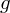 : 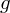 | ||||
| 1 | axiom | ⊢ | ||
| proveit.logic.equality.substitution | ||||
Note that $x$ and $y$ mapped to themselves by default. When a mapping is not specified, the default is to map the variable to itself.
Next we explicitly specialize the operands $x$ and $y$ to $a$ and $b$, respectively, in the original substitution axiom (and notice that we must explicitly include the assumption that $a = b$, else the substitution axiom will not apply):
from proveit._common_ import a, b
from proveit.logic import Equals
a_eq_b = Equals(a, b)
operandSubstitution = substitution.specialize({x:a, y:b}, assumptions=[a_eq_b])
 ⊢
⊢ 
operandSubstitution.proof()
| step type | requirements | statement | ||
|---|---|---|---|---|
| 0 | specialization | 1, 2 | ⊢ | |
: , : 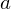, :  | ||||
| 1 | axiom | ⊢ | ||
| proveit.logic.equality.substitution | ||||
| 2 | assumption | ⊢  | ||
Operation substitution can be done explicitly via a lambda expression just as we saw with expression substitution. The lambda expression is not literally substituted in; rather, the function that it represents is applied as the operation.
operationSubstitution = substitution.specialize({f:Lambda(x, Add(x, a))})

operationSubstitution.proof()
| step type | requirements | statement | ||
|---|---|---|---|---|
| 0 | specialization | 1 | ⊢ | |
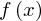 :  | ||||
| 1 | axiom | ⊢ | ||
| proveit.logic.equality.substitution | ||||
An alternative way to specify an operation substitution is to map the operation applied to a variable (e.g., the operation $f$ applied to $x$ as $f(x)$) onto an expression that uses this same variable (e.g., Add(x, a)). In the example below, we map $f(x)$ to $x + a$. This will be internally translated to the same lambda expression as before: $x \mapsto x + a$.
from proveit._common_ import fx
operationSubstitution2 = substitution.specialize({fx:Add(x, a)})
The proof is exactly the same as before.
operationSubstitution2.proof()
| step type | requirements | statement | ||
|---|---|---|---|---|
| 0 | specialization | 1 | ⊢ | |
| : | ||||
| 1 | axiom | ⊢ | ||
| proveit.logic.equality.substitution | ||||
Specializing multiple levels simultaneously¶
When Forall operations are nested, the universal quantifications may be specialized separately.
Consider, for example, the nested quantification expression $\forall_x [\forall_y [\forall_{z|z<(x+y)} P(x, y, z)]]$, defined below:
from proveit._common_ import z, Pxyz
from proveit.number import Less, Add
nestedForall = Forall(x, Forall(y, Forall(z, Pxyz, conditions=[Less(z, Add(x, y))])))

We can successively specialize to reach the inner-most instance-defining variable $z$:
nestedForallSpec1 = nestedForall.specialize(assumptions=[nestedForall])
 ⊢
⊢ 
nestedForallSpec2 = nestedForallSpec1.specialize()
⊢ 
nestedForallSpec3 = nestedForallSpec2.specialize(assumptions=[nestedForallSpec2.conditions[0]])
 ⊢ 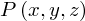
⊢ 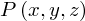nestedForallSpec3.proof()
| step type | requirements | statement | ||
|---|---|---|---|---|
| 0 | specialization | 1, 2 | ⊢ | |
| 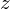 : | ||||
| 1 | specialization | 3 | ⊢ | |
| : | ||||
| 2 | assumption |  ⊢ ⊢  | ||
| 3 | specialization | 4 | ⊢ | |
| : | ||||
| 4 | assumption | ⊢ | ||
But for the sake of convenience and efficiency, Prove-It also allows nested Forall operations to be specialized simultaneously:
assumptions = ExprList(nestedForall, nestedForallSpec2.conditions[0])
nestedForallSimultaneousSpec = nestedForall.specialize({z:z}, assumptions=assumptions)

We just need to include an explicit mapping for an inner quantified variable. So we indicated above that we want to map $z$ to $z$, even though this is typically the default, in order to force it to specialize all three Forall operations simultaneously. The proof is shorter, doing a single all-in-one specialization:
nestedForallSimultaneousSpec.proof()
Such simultaneous specialization can be done for any number of nested levels.
As a quick aside, it worth noting that the original nested Forall involving the instance variables $x$, $y$, and $z$ could have instead been expressed as $\forall_{x, y, z | z < x + y} P(x, y, z)$, constructed in the following way (also see the section further below on “Universal quantification over multiple variables”):
altNestedForall = Forall([x, y, z], Pxyz, conditions=[Less(z, Add(x, y))])

Note that the meaning of the original nestedForall object $\forall_x [\forall_y [\forall_{z|z<x+y} P(x, y, z)]]$ and the meaning of our alternative altNestedForall object $\forall_{x, y, z | z < x + y} P(x, y, z)$ are the same:
altNestedForall == nestedForall
We can now accomplish the same specialization as follows:
altNestedForallSpec = altNestedForall.specialize(assumptions=[altNestedForall, Less(z, Add(x, y))])

with similar proof details:
altNestedForallSpec.proof()

Specializing and relabeling simultaneously¶
It is also possible to achieve relabeling and specialization (over any number of nested levels) in a single step.
For example, recall our nested Forall object $\forall_x [\forall_y [\forall_{z|z<x+y} P(x, y, z)]]$ from above (explicitly redefined here in case changes were made above):
nestedForall = Forall(x, Forall(y, Forall(z, Pxyz, conditions=[Less(z, Add(x, y))])))
We can specialize the outermost instance variable $x$ while simultaneously relabeling the instance variable $z$ to $a$:
nestedForall.specialize(relabelMap={z:a}, assumptions=[nestedForall])
⊢ 
Or we can specialize all the way down to the innermost instance variable ($z$) while simultaneously relabeling the instance variable $z$ to $a$:
nestedForallSpecAndRelab = nestedForall.specialize(specializeMap={y:y}, relabelMap={z:a}, assumptions=[nestedForall])
⊢ 
In that specialize() command, we used the explicit specializeMap and relabelMap designations to distinguish the two types of mappings, but we could have relied simply on the order of the input arguments instead, with the specialization mapping(s) expected first and the relabel mapping(s) expected second:
nestedForall.specialize({y:y}, {z:a}, assumptions=[nestedForall, Less(a, Add(x, y))])
⊢
We can take a quick look at the related proof to see how the specialization and relabeling mappings are indicated:
nestedForallSpecAndRelab.proof()
The relabeling map is always shown after the last comma in the mapping under the specialization step. When any specialization occurs, the "step type" is labeled "specialization". If there is only relabeling, the "step type" will indicate "relabeling".
You are not allowed to specify that the same variable is to be specialized and relabeled. For example, recall once again our nested Forall object:
nestedForall
We can specialize the inner instance variable $y$ to $b$:
nestedForall.specialize({y:b}, assumptions=[nestedForall])
⊢ 
But we cannot simultaneously specialize $y$ to $b$ and also relabel $y$ with $a$:
try:
nestedForall.specialize({y:b}, {y:a}, assumptions=[nestedForall])
assert False, "Expecting a SpecializationFailure error; should not make it to this point"
except SpecializationFailure as e:
print("EXPECTED ERROR:", e)
As noted in the previous tutorial chapter (tutorial04_relabeling), relabeling has another important limitation. You cannot relabel something using assumptions that involve any of the relabeling variables. For example, we cannot relabel $P$ to $R$ in nestedForall while assuming nestedForall. (Would be nice to elaborate on this briefly.)
from proveit import RelabelingFailure
try:
nestedForall.specialize({y:y}, {P:R}, assumptions=[nestedForall])
assert False, "Expecting an RelabelingFailure error; should not make it to this point"
except RelabelingFailure as e:
print("EXPECTED ERROR:", e)
Universal quantification over multiple variables¶
Rather than nesting Forall operations, you can quantify over multiple instance variables for a more succinct expression. For example, instead of writing $\forall_{x\,\in\ S} [\forall_{y\,\in\, S} P(x, y)]$, you could write $\forall_{x, y\,\in\, S} P(x, y)$, constructed like this:
multiVarForall = Forall((x, y), Pxy, domain=S)

Specialization is still achieved in the same way. Here, for example, we assume the Forall expression along with specific $x$ and $y$ values in set $S$:
assumptions = [multiVarForall, InSet(x, S), InSet(y, S)]
multiVarForallSpec = multiVarForall.specialize(assumptions=assumptions)

We can see how ProveIt conceptualizes that specialization by calling its proof() method:
multiVarForallSpec.proof()


Note that when constructing a Forall object, if you attempt to use the same variable multiple times in the list of instance variables, you will get an error:
try:
Forall((x, x), Px)
except ValueError as e:
print('EXPECTED ERROR:', e)
You can also specify different domains for each a set of instance variables, providing a list (or ExprList) for domains rather than domain. The display notation will indicate a cartesian product set.
multiDomainForall = Forall((x, y), Pxy, domains=[S, R])

Internally, however, ProveIt simply splits off a condition for each instance variable. Notice lines 6 and 12 in the following exprInfo() details:
multiDomainForall.exprInfo()


We can perform a specialization of $\forall_{(x, y)\,\in\, S \,\times\, R} P(x, y)$ analogous to the previous specialization of $\forall_{x, y\,\in\, S} P(x, y)$, but now specifying distinct set-inclusion assumptions for the variables $x$ and $y$:
assumptions = [multiDomainForall, InSet(x, S), InSet(y, R)]
multiDomainForallSpec = multiDomainForall.specialize(assumptions=assumptions)

multiDomainForallSpec.proof()


Universal quantification over an unspecified number of variables via iterations will be discussed in the chapter on proofs using advanced expressions.
Generalization¶
Generalization is the "inverse" of specialization just as hypothetical reasoning was the "inverse" of modus ponens. We can write these derivation rules in a manner that makes this relationship clear (just as we did for hypothetical reasoning and modus ponens):
Specialization: $\begin{array}{c} \boldsymbol{\vdash} \forall_{x \in S~|~Q(x)} P(x) \\ \hline \left \{\clubsuit \in S,~Q(\clubsuit) \right \} \boldsymbol{\vdash} P(\clubsuit) \end{array}$
Generalization: $\begin{array}{c} \left \{ x \in S,~Q(x) \right \} \boldsymbol{\vdash} P(x) \\ \hline \boldsymbol{\vdash} \forall_{x \in S~|~Q(x)} P(x) \end{array}$
$P(x)$ and $Q(x)$ are intended to represent any function of $x$. There is some asymmetry between specialization and generalization. $\clubsuit$ here is meant to represent any expression, not necessarily a variable, as long is it does not violate scoping restrictions (e.g., having a free variable that is the same as a lambda parameter within the $P$ or $Q$ functions). However, generalization only applies to an unbound variable. In Prove-It, an unbound variable is regarded as an "arbitrary" variable. Essentially, it is implicitly universally quantified. Recall that modus ponens converts an explicit antecedent to an implicit assumption and hypothetical reasoning does the opposite. Similarly, specialization converts an explicit universal quantification to implicit arbitrary variables and generalization does the opposite. The reason for having the explicit and implicit forms is much the same as it was for the antecedent versus assumption. The explicit form allows nesting but the implicit form provides direct access to the instance expression. Furthermore, explicit universal quantification offers the power of being able to specialize an instance variable to an arbitrary expression.
The above derivation rules are expressed for a single variable. Such rules apply more generally to any number of variables (including an unspecified number of variables via iterations discussed in in the chapter on proofs using advanced expressions).
The following examples will start from a specialization instance of the substitution known truth visited earlier:
substitution
operationSubstitution = substitution.specialize({f:Lambda(x, Add(x, a)), x:x, y:y}, assumptions=[Equals(x, y)])
 ⊢
⊢ 
First, we try to generalize this known truth for all instances of $a$, $x$, and $y$ without any conditions or domain restrictions:
from proveit import GeneralizationFailure
try:
operationSubstitution.generalize((a, x, y))
assert False, "Expecting a GeneralizationFailure error; should not make it to this point"
except GeneralizationFailure as e:
print('EXPECTED ERROR:', e)
That generalize() attempt fails because the assumptions of the original known truth involve the same variables that we are trying to generalize over. That is not allowed because universal quantification introduces a new scope for $x$ and $y$ (as well as $a$) and the $x=y$ assumption would be external to this scope. If, however, this assumption is introduced as a condition of the new universal quantification, then we no longer need to retain it as an assumption. That assumption will be absorbed into the universal quantification conditions.
operationSubstitution.generalize((a, x, y), conditions=[x_eq_y])

Adding additional restrictions, such as a domain and/or other conditions, only makes the statement weaker and is therefore allowed:
operationSubstitution.generalize((a, x, y), conditions=[x_eq_y], domain=S)

operationSubstitution.generalize((a, x, y), conditions=[x_eq_y, Qx], domain=S)

It is also possible to create multiple levels of nested Forall operations in one step with possibly different domains. Simply provide a list of lists of Variables as the first argument to generalize and a corresponding list of domains. The conditions are applied at the outermost level possible (as soon as all of the relevant variables have been introduced) but otherwise retaining the order that the conditions were supplied.
Qa = Function(Q, a)
nestedGenExample = operationSubstitution.generalize([[a], [x, y]], domainLists=[[P], [R, S]], conditions=[x_eq_y, Qx, Qa])

Note that the $Q(a)$ condition was moved to the front even though it was the last supplied condition because it can be applied before the others. The generalization with multiple leves of nested Forall operations takes one step in the proof:
nestedGenExample.proof()
| step type | requirements | statement | ||
|---|---|---|---|---|
| 0 | generalizaton | 1 | ⊢ | |
| 1 | specialization | 2, 3 | ⊢ | |
| : , : , : | ||||
| 2 | axiom | ⊢ | ||
| proveit.logic.equality.substitution | ||||
| 3 | assumption | ⊢ | ||
For any level in which multiple instance variables are introduced, a domain can be supplied for each new variable (as above) or one may be specified as the same domain for each of them:
operationSubstitution.generalize([[a], [x, y]], domainLists=[[P], [R]], conditions=[x_eq_y, Qx, Qa])

When generalizing over a single variable, the first argument may be just that variable rather than a list or tuple:
operationSubstitution.generalize(a, conditions=[Qa])
⊢ 
We may only generalize over variables (or iterations of variables) however:
try:
operationSubstitution.generalize(Qx, conditions=[Qa])
assert False, "Expecting an ValueError error; should not make it to this point"
except ValueError as e:
print('EXPECTED ERROR:', e)
try:
operationSubstitution.generalize([[a], [Qx]], conditions=[Qa])
assert False, "Expecting an ValueError error; should not make it to this point"
except ValueError as e:
print('EXPECTED ERROR:', e)
%end universal_quantification
Generalizing an unspecified number of variables via an iteration will be discussed in the chapter on proofs using advanced expressions.